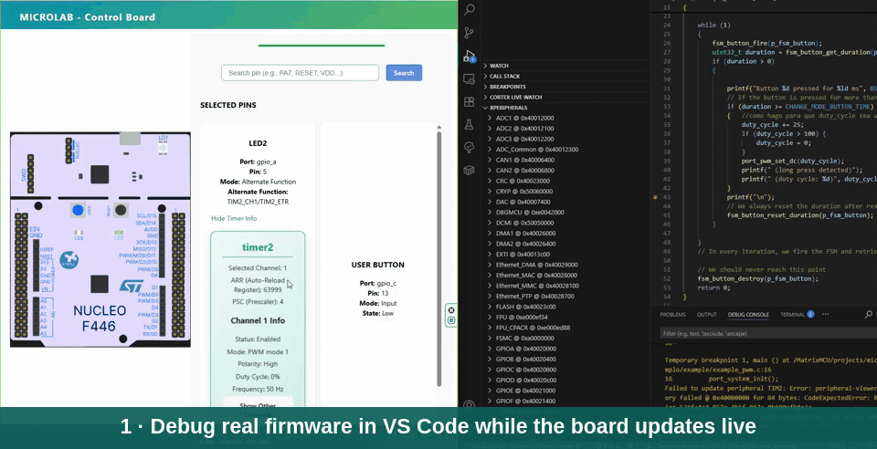

MICROLAB
Bachelor's thesis · UPM, 2025 · graded 10/10 with honors
A virtual lab for learning microcontroller programming without the hardware. Students run real STM32 firmware in an emulator and watch pins, timers and PWM change live in the browser while they debug in VS Code.
- Wrote the Rust backend that talks to QEMU, models the chip's registers and pushes live updates over WebSockets.
- Built the React interface and a Docker setup that installs in one step.
- Tested it with 70 students and 8 lecturers: over 90% found it useful and 90% found it easier to set up than their current tools.
- Rust
- Tokio
- QEMU
- React
- TypeScript
- WebSockets
- Docker